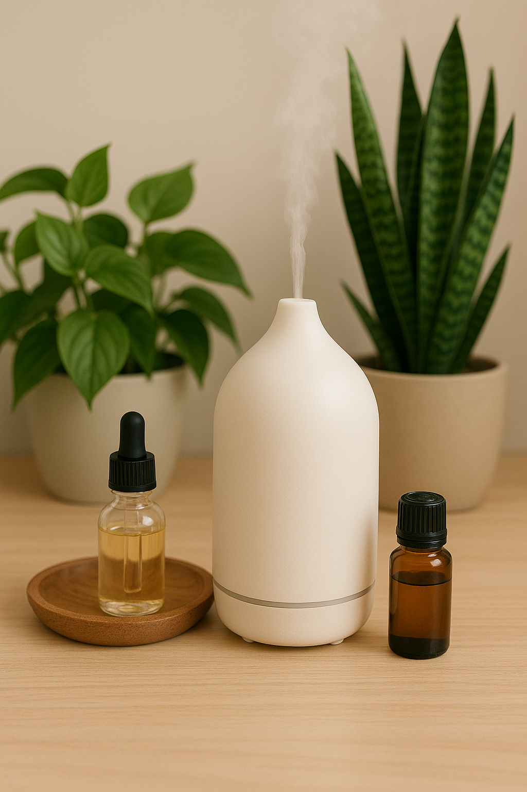

🧴 Óleos essenciais, gatos e plantas: cuidado redobrado
Os óleos essenciais são populares em terapias naturais, decoração e autocuidado. Mas quando se trata de ambientes com gatos (e até plantas sensíveis), é hora de redobrar a atenção.
O metabolismo dos felinos é muito diferente do nosso. Eles não conseguem eliminar certas substâncias presentes em óleos como tea tree, lavanda, eucalipto, canela e hortelã-pimenta. A exposição — mesmo por difusão no ar — pode causar sintomas como salivação excessiva, vômitos, tremores e até convulsões.
Difusores ultrassônicos, especialmente em locais fechados, liberam micropartículas que se depositam em superfícies e podem ser inaladas ou absorvidas pela pele dos gatos. Isso vale também para a aplicação direta sobre móveis ou caminhas.
Além disso, algumas plantas ornamentais também reagem mal à presença constante desses compostos voláteis, mostrando manchas ou queda precoce de folhas.
Se quiser usar óleos com segurança:
- 🏠 Use em ambientes bem ventilados e longe dos gatos
- 🛏️ Mantenha difusores fora do alcance dos pets e desligue-os à noite
- 🌿 Prefira aromatizadores naturais à base de ervas frescas ou sprays pet-friendly
💧 O aroma que relaxa você pode intoxicar seu gato — e até suas plantas. Use com consciência e sempre priorize o bem-estar de todos no ambiente.
← Voltar para o blog